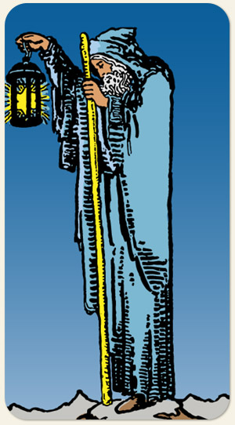

A introspecção, a sabedoria silenciosa e o autogerenciamento. Ele não é um símbolo de isolamento triste, mas de um retiro consciente para ganhar perspectiva. É o arquétipo do guia interno que nos ensina que, para iluminar o caminho dos outros, primeiro precisamos encontrar a chama dentro de nós mesmos.
Positivo: Paciência, sabedoria, maturidade, bom envelhecimento, o tempo e a razão dando bons frutos, conhecimento das leis da vida, ausência de excessos, saber o que é realmente indispensável, estilo de vida minimalista.
Negativo: Moribundo e decrépito, velho e imaturo, o cajado que deveria ser um elemento de poder vira uma bengala para quem não é capaz de andar sozinho, ranzinza, nostálgico em excesso, ultrapassado, maltrapilho, apegado ao passado.
Símbolos: Lamparina, Estrela de Seis Pontas, Cajado, Manto Cinza, Montanha Nevada, Olhar para Baixo, Postura Curvada.
Cores: Amarelo, Cinza, Branco.
Elementos: Terra e Espírito.